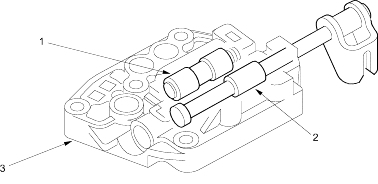

Honda Multi Matic Transmission/CVT
|
14-275 |
Manual Valve Body
The manual valve body contains the manual valve and the reverse inhibitor valve. The manual valve body in bolted on the intermediate housing.
The manual valve mechanically uncovers/covers the fluid passage according to the shift lever position.
The reverse inhibitor is controlled by the SH-A pressure from the reverse inhibitor solenoid. The reverse inhibitor valve intercepts the hydraulic circuit to the reverse brake while the vehicle is moving forward at speeds over about 6 mph (10 km/h).
 |
|